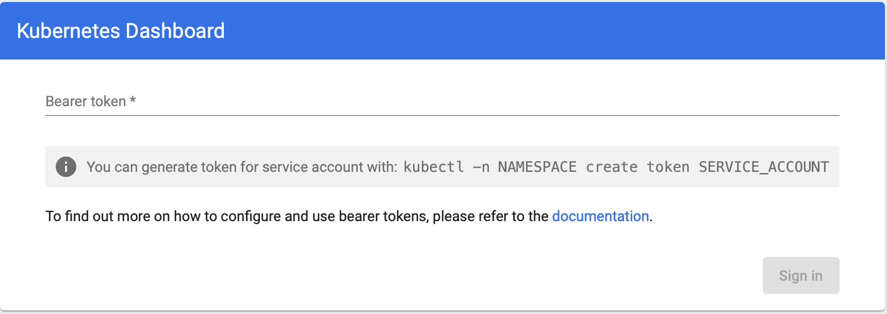
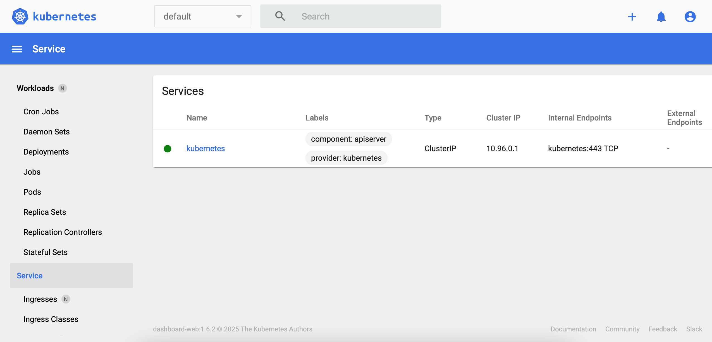

See this page for more details about Kubernetes Web UI (Dashboard):
https://kubernetes.io/docs/tasks/access-application-cluster/web-ui-dashboard/
-
Deploying the Dashboard UI:
See this page for details Helm installation:
Install Helm
Add kubernetes-dashboard repository:
$ helm repo add kubernetes-dashboard https://kubernetes.github.io/dashboard/
"kubernetes-dashboard" has been added to your repositories
Deploy a Helm Release named "kubernetes-dashboard" using the kubernetes-dashboard chart:
$ helm upgrade --install kubernetes-dashboard kubernetes-dashboard/kubernetes-dashboard --create-namespace --namespace kubernetes-dashboard
Release "kubernetes-dashboard" does not exist. Installing it now.
NAME: kubernetes-dashboard
NAMESPACE: kubernetes-dashboard
STATUS: deployed
REVISION: 1
TEST SUITE: None
NOTES:
*************************************************************************************************
*** PLEASE BE PATIENT: Kubernetes Dashboard may need a few minutes to get up and become ready ***
*************************************************************************************************
Congratulations! You have just installed Kubernetes Dashboard in your cluster.
To access Dashboard run:
kubectl -n kubernetes-dashboard port-forward svc/kubernetes-dashboard-kong-proxy 8443:443
NOTE: In case port-forward command does not work, make sure that kong service name is correct.
Check the services in Kubernetes Dashboard namespace using:
kubectl -n kubernetes-dashboard get svc
Dashboard will be available at:
https://localhost:8443
-
Check the Dashboard Service:
$ kubectl get services -n kubernetes-dashboard -o wide
NAME TYPE CLUSTER-IP EXTERNAL-IP PORT(S) AGE SELECTOR
kubernetes-dashboard ClusterIP 10.101.99.76 <none> 443/TCP 7d9h k8s-app=kubernetes-dashboard
...
-
Check the Dashboard Deployment:
$ kubectl get deployments -n kubernetes-dashboard -o wide
NAME READY UP-TO-DATE AVAILABLE AGE CONTAINERS IMAGES SELECTOR
kubernetes-dashboard 1/1 1 1 7d9h kubernetes-dashboard kubernetesui/dashboard:v2.2.0 k8s-app=kubernetes-dashboard
...
-
Check the Dashboard Pods:
$ kubectl get pods -n kubernetes-dashboard -o wide
NAME READY STATUS RESTARTS AGE IP NODE NOMINATED NODE READINESS GATES
kubernetes-dashboard-76577bd7bb-22mzj 1/1 Running 0 7d9h 10.1.0.145 docker-desktop <none> <none>
...
-
Accessing the Dashboard UI:
$ kubectl port-forward svc/kubernetes-dashboard-kong-proxy 8443:443 -n kubernetes-dashboard
Forwarding from 127.0.0.1:8443 -> 8443
Forwarding from [::1]:8443 -> 8443
Handling connection for 8443
To access the Web UI (Dashboard), open your favorite browser and copy paste the URL:
https://localhost:8443

-
Generate a Bearer Token for a Service Account:
Create a service account:
$ kubectl create serviceaccount kubernetes-dashboard-admin -n kubernetes-dashboard
serviceaccount/kubernetes-dashboard-admin created
Create a service account using the yaml file:
apiVersion: v1
kind: ServiceAccount
metadata:
name: kubernetes-dashboard-admin
namespace: kubernetes-dashboard
$ kubectl apply -f kubernetes-dashboard-service-account.yaml -n kubernetes-dashboard
Create a cluster role binding:
$ kubectl create clusterrolebinding kubernetes-dashboard-admin --clusterrole=cluster-admin --serviceaccount=kubernetes-dashboard:kubernetes-dashboard-admin
lusterrolebinding.rbac.authorization.k8s.io/kubernetes-dashboard-admin created
Create a cluster role binding using the yaml file:
apiVersion: rbac.authorization.k8s.io/v1
kind: ClusterRoleBinding
metadata:
name: admin-user
roleRef:
apiGroup: rbac.authorization.k8s.io
kind: ClusterRole
name: cluster-admin
subjects:
- kind: ServiceAccount
name: kubernetes-dashboard-admin
namespace: kubernetes-dashboard
$ kubectl apply -f kubernetes-dashboard-cluster-role-binding.yaml -n kubernetes-dashboard
Generate a Bearer Token:
$ kubectl create token kubernetes-dashboard-admin -n kubernetes-dashboard
eyJhbGciOiJSUzI1NiIsImtpZCI6ImNRSWpaaWtzSGprazQ...

-
Accessing the Dashboard UI remotely:
Forward the port 8443 from Windows into your Linux WSL distro.
The portproxy server listens for messages sent to a specific port and IPv4 address and maps a port and IPv4 address to send the messages received after establishing a separate TCP connection.
-
listenaddress: Specifies the IPv4 address for which to listen ("0.0.0.0" any IPv4 address).
-
listenport: Specifies the IPv4 port on which to listen ("8443").
-
connectaddress: Specifies the IPv4 address to which to connect ("172.26.110.211", this should be the address of your Linux WSL distro).
-
connectport: Specifies the IPv4 port to which to connect ("8443").
C:\Users\mtitek>netsh interface portproxy add v4tov4 listenaddress=0.0.0.0 listenport=8443 connectaddress=172.26.110.211 connectport=8443
To check the Port:
C:\Users\mtitek>netsh interface portproxy show v4tov4
Listen on ipv4: Connect to ipv4:
Address Port Address Port
------- ---- ------- ----
0.0.0.0 8443 172.26.110.211 8443
Add a new firewall rule to enable the port.
C:\Users\mtitek>netsh advfirewall firewall add rule name="Open Port 8443 - WSL 2" dir=in action=allow protocol=TCP localport=8443
To check the rule:
C:\Users\mtitek>netsh advfirewall firewall show rule status=enabled dir=in name=all | select-string -pattern "(LocalPort.*8443)" -context 9,4
Rule Name: Open Port 8443 - WSL 2
-------------------------------------------
Enabled: Yes
LocalPort: 8443
...
Start kubectl proxy command:
$ kubectl port-forward svc/kubernetes-dashboard-kong-proxy 8443:443 --address='0.0.0.0' -n kubernetes-dashboard
Forwarding from 0.0.0.0:8443 -> 8443
Handling connection for 8443
To delete the firewall rule:
C:\Users\mtitek>netsh advfirewall firewall delete rule name="Open Port 8443 - WSL 2"
To delete the IPv4 port and address from the list of IPv4 ports and addresses for which the server listens:
C:\Users\mtitek>netsh interface portproxy delete v4tov4 listenaddress=0.0.0.0 listenport=8443